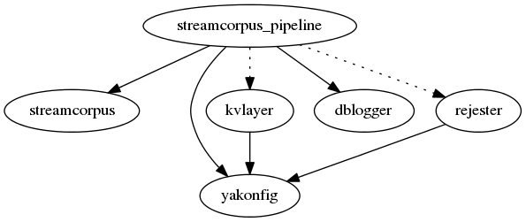

1. Overview of StreamCorpus software components¶
StreamCorpus provides a toolkit for processing massive streams of text and running natural language extractors on the text. StreamCorpus does not provide any extractors itself; it operates third-party extractors, such as Serif and Factorie, and unifies their output. StreamCorpus pipline can store documents in S3, Accumulo, or flat files.
StreamCorpus is used extensively in TREC KBA, TREC Temporal Summarization, TREC Dynamic Domain, and at Diffeo.
Ask more at StreamCorpus Google Group
All of these python package are hosted in github.com/trec-kba and github.com/diffeo
1.1. Invocation¶
The general data flow is as follows:
- Convert your input format into
streamcorpus.StreamItemformat. This generally needs to be done by custom code implementing thestreamcorpus_pipelinereader stage interface. - Run streamcorpus_pipeline over the original inputs to
produce
streamcorpus.Chunkfiles, either stored locally or inkvlayerbacked storage.
All of the programs share a common configuration interface. You can
pass --dump-config to any of the
programs to see the default configuration, and --config to any of them to provide your own configuration
file.
1.2. Example¶
One convenient path to load data is to use the
yaml_files_list
reader to load in plain-text data files matching known entities. We
will load the data into Apache Accumulo as a backing database. Create
a shared configuration file, common.yaml, that includes the
basic shared setup, as well as some basic logging configuration and
support for the rejester distributed computing environment:
logging:
root:
level: INFO
kvlayer:
app_name: datasets
namespace: mydataset
storage_type: accumulo
storage_addresses: [ "accumulo-proxy.example.com:50096" ]
username: root
password: secret
rejester: # necessary but unused in this example
app_name: datasets
namespace: mydataset
registry_addresses: [ "redis.example.com:6379" ]
The reader needs a specific YAML file to tell it where to find input
documents and how to label them. This file, labels.yaml,
looks like:
root_path: # "empty" means working directory
source: source # embedded in StreamItem.source
annotator_id: annotator # embedded in labels
entities:
- target_id: https://kb.diffeo.com/entity
doc_path: data
slots:
- canonical_name: Entity
- entity
This will cause the reader to read the documents under the
data path, create a stream item for each marked as coming from
source, and search each for appearances of the term “entity”.
Mentions of that term will be labelled as corresponding to the
https://kb.diffeo.com/entity entity, according to the annotator
“annotator”.
A streamcorpus_pipeline configuration that reads this using
the Serif NLP tagger can be stored in
streamcorpus_pipeline.yaml:
# ... paste common.yaml here ...
streamcorpus_pipeline:
third_dir_path: /third
tmp_dir_path: tmp
output_chunk_max_count: 500
reader: yaml_files_list
incremental_transforms:
- language
- guess_media_type
- clean_html
- hyperlink_labels
- clean_visible
batch_transforms: [ serif ]
writers: [ to_kvlayer ]
hyperlink_labels:
require_abs_url: true
all_domains: true
offset_types: [ BYTES, CHARS ]
serif:
path_in_third: serif/serif-latest
cleanup_tmp_files: true
par: streamcorpus_one_step
align_labels_by: names_in_chains
aligner_data:
chain_selector: ANY_MULTI_TOKEN
annotator_id: annotator
Then you can run
streamcorpus_pipeline \
--config streamcorpus_pipeline.yaml --input labels.yaml
1.3. Module dependencies¶
